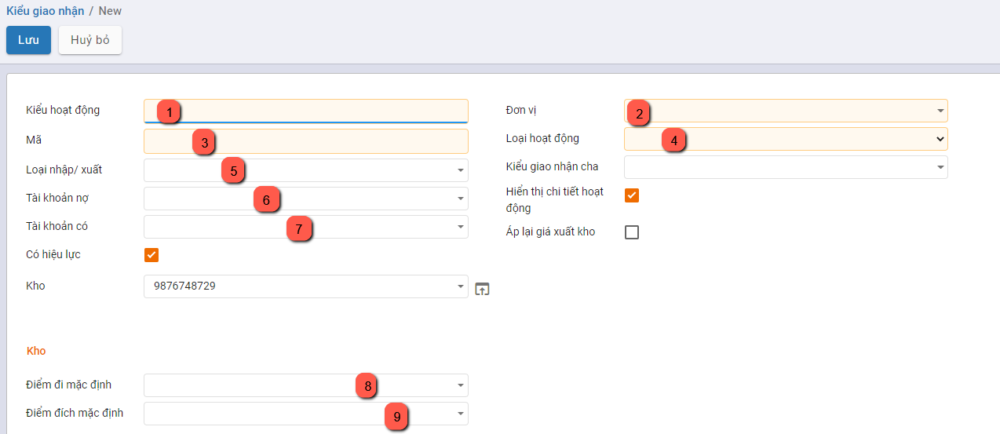
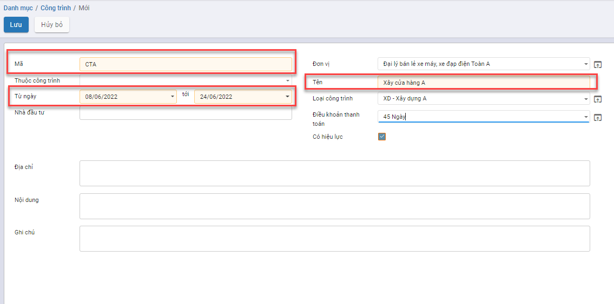

Khai báo danh mục
Thực hiện hướng dẫn cách thức thực hiện về các Danh mục cần khai báo trên phần mềm Kế toán. Việc khai báo các Danh mục có thể được thực hiện tại bất kỳ thời điểm nào tùy thuộc người sử dụng: có thể trước thời điểm nhập chứng từ hay thực hiện được ngay tại thời điểm nhập chứng từ.
Đối tượng
Nhóm đối tượng
Mục đích
Quản lý thông tin về các nhóm đối tượng khác nhau, phục vụ cho việc quản lý danh sách khách hàng và nhà cung cấp của doanh nghiệp.
Chức năng Danh mục Nhóm đối tượng được quản lý tập trung tại phần Danh mục
Các bước thực hiện
Bước 1: Vào Danh mục: chọn Nhóm đối tượng và nhấn nút Chi tiết
Thông tin Danh mục Nhóm đối tượng được hiển thị để người dùng khai báo

Bước 2: Để khai báo thêm Nhóm người dùng, người dùng nhấn nút TạoTrên màn hình Nhóm người dùng và thực hiện Khai báo các thông tin:

- Mã nhóm: Không trùng với Mã đã khai báo
- Tên nhóm: Thông tin để quản lý
Bước 3: Nhấn nút Lưu
Khách hàng
Mục đích
Chức năng này cho phép người dùng khai báo các Khách hàng của Công ty. Thực hiện Quản lý danh sách các khách hàng, phục vụ cho việc lập và hạch toán các chứng từ kế toán liên quan đến hoạt động bán hàng, hóa đơn.
Chức năng Danh mục Khách hàng được quản lý tập trung tại phần Danh mục của Phân hệ Kế toán
Xem video hướng dẫn
Hướng dẫn trên phần mềm
Bước 1: Vào Danh mục/Đối tượng/Khách hàng. Nhấn Chi tiết để vào danh mục

Bước 2: Nhấn nút tạo  để thực hiên thêm mới khách hàng
để thực hiên thêm mới khách hàng

Bước 3: Nhập đủ thông tin cần thiết:

-
Nếu khách hàng là một cá nhân thực hiện chọn Cá nhân nếu khách hàng là một công ty, thực hiện chọn Công ty
-
Nhập tên khách hàng hoặc tên công ty
-
Chọn công ty nếu khách hàng thuộc một công ty bên ngoài
-
Chọn kiểu đối tượng bổ sung nếu khách hàng đó vừa là khách hàng hoặc vừa là nhà cung cấp
-
Nhập địa chỉ, mã số thuế. Nếu chọn Công ty thì địa chỉ và mã số thuế mặc định bằng địa chỉ, mã số thuế của công ty đã chọn
-
Nhập thông tin chức vụ, số điện thoại, số di động , email, website, xưng hô
-
Thay đổi ảnh đại diện của khách hàng bằng cách nhấn nút
 và lựa chọn ảnh đại diện mong muốn
và lựa chọn ảnh đại diện mong muốn -
Có thể bổ sung thêm địa chỉ liên lạc của khách hàng bằng cách vào nhóm Các liên lạc & địa chỉ, thêm mới địa chỉ

Một cửa sổ mới hiện ra, nhập đủ thông tin địa chỉ và chọn Lưu
- Nội dung khai báo tại Lên hóa đơn:
- Thông tin Ngân hàng và Số tài khoản: Doanh nghiệp có giao dịch Mua hàng/Bán hàng với Khách hàng và thực hiện Thanh toán: thông tin Số tài khoản đã khai báo sẽ được hiển thị để Kế toán thực hiện chọn và Thanh toán
Bước 3: Nhấn nút Lưu để lưu lại thông tin nhân viên đã nhập
Sau khi lưu thành công, trên mỗi một khách hàng, người dùng có thể theo dõi được một số thông tin đi kèm như:
Số đơn bán hàng, đơn mua hàng được tạo
Thông tin giao hàng
Số hóa đơn đã xuất
Công nợ nhà cung cấp
Tài liệu đính kèm
Khi nhấn vào các Đầu mục theo dõi, hệ thống tự động Truy vết các Giao dịch gắn đã thực hiện với Khách hàng

Lưu ý:
-
Để sửa lại thông tin khách hàng đã khai báo, sử dụng chức năng Sửa trên thanh công cụ.
-
Khách hàng đã được sử dụng tại các chứng từ kế toán khác sẽ không được xóa
Nhà cung cấp
Mục đích
Quản lý danh sách các nhà cung cấp, phục vụ cho việc lập và hạch toán các chứng từ kế toán liên quan đến hoạt động mua hàng hoá, dịch vụ.
Xem video hướng dẫn
Hướng dẫn trên phần mềm
Bước 1: Vào Danh mục/Đối tượng/Nhà cung cấp. Nhấn Chi tiết để vào danh mục
Bước 2: Nhấn nút tạo để thực hiên thêm mới nhà cung cấp

Bước 3: Nhập đủ thông tin cần thiết:
-
Nếu nhà cung cấp là một cá nhân thực hiện chọn Cá nhân nếu khách hàng là một công ty, thực hiện chọn Công ty
-
Nhập tên nhà cung cấp hoặc tên công ty
-
Chọn công ty nếu nhà cung cấp thuộc một công ty bên ngoài
-
Chọn kiểu đối tượng bổ sung nếu nhà cung cấp đó vừa là khách hàng hoặc vừa là nhà cung cấp
-
Nhập địa chỉ, mã số thuế. Nếu chọn Công ty thì địa chỉ và mã số thuế mặc định bằng địa chỉ, mã số thuế của công ty đã chọn
-
Nhập thông tin chức vụ, số điện thoại, số di động , email, website, xưng hô
-
Thay đổi ảnh đại diện của nhà cung cấp bằng cách nhấn nút
và lựa chọn ảnh đại diện mong muốn -
Có thể bổ sung thêm địa chỉ liên lạc của nhà cung cấp bằng cách vào nhóm Các liên lạc & địa chỉ, thêm mới địa chỉ

Một cửa sổ mới hiện ra, nhập đủ thông tin địa chỉ và chọn Lưu
- Nội dung khai báo tại Lên hóa đơn:
- Thông tin Ngân hàng và Số tài khoản: Doanh nghiệp có giao dịch Mua hàng/Bán hàng với Khách hàng và thực hiện Thanh toán: thông tin Số tài khoản đã khai báo sẽ được hiển thị để Kế toán thực hiện chọn và Thanh toán
Bước 3: Nhấn nút Lưu để lưu lại thông tin nhân viên đã nhập
Sau khi lưu thành công, trên mỗi một khách hàng, người dùng có thể theo dõi được một số thông tin đi kèm như:
Số đơn bán hàng, đơn mua hàng được tạo
Thông tin giao hàng
Số hóa đơn đã xuất
Công nợ nhà cung cấp
Tài liệu đính kèm
Khi nhấn vào các Đầu mục theo dõi, hệ thống tự động Truy vết các Giao dịch gắn đã thực hiện với Nhà cung cấp
Lưu ý:
-
Để sửa lại thông tin nhà cung cấp đã khai báo, sử dụng chức năng Sửa trên thanh công cụ.
-
Nhà cung cấp đã được sử dụng tại các chứng từ kế toán khác sẽ không được xóa
Nhân viên
Danh mục nhân viên quản lý thông tin về các nhóm đối tượng khác nhau, phục vụ cho việc quản lý danh sách nhân viên của doanh nghiệp
Xem video hướng dẫn
Hướng dẫn trên phần mềm
Bước 1: Vào Danh mục/Đối tượng/Nhân viên. Nhấn Chi tiết để vào danh mục
Bước 2: Nhấn nút tạo để thực hiên thêm mới nhân viên
Bước 3: Nhập đủ thông tin cần thiết:

-
Nhập tên nhân viên
-
Chọn công ty nếu nhân viên thuộc công ty ngoài
-
Chọn kiểu đối tượng nếu nhân viên đó vừa là khách hàng hoặc vừa là nhà cung cấp
-
Nhập địa chỉ, mã số thuế. Nếu chọn Công ty thì địa chỉ và mã số thuế mặc định bằng địa chỉ, mã số thuế của công ty đã chọn
-
Nhập thông tin chức vụ, số điện thoại, số di động , email, website, xưng hô
-
Thay đổi ảnh đại diện của nhân viên bằng cách nhấn nút
và lựa chọn ảnh đại diện mong muốn -
Có thể bổ sung thêm địa chỉ liên lạc của nhân viên bằng cách vào nhóm Các liên lạc & địa chỉ, thêm mới địa chỉ

Một cửa sổ mới hiện ra, nhập đủ thông tin địa chỉ và chọn Lưu
- Nội dung khai báo tại Lên hóa đơn:
- Thông tin Ngân hàng và Số tài khoản: Doanh nghiệp có giao dịch Mua hàng/Bán hàng với Khách hàng và thực hiện Thanh toán: thông tin Số tài khoản đã khai báo sẽ được hiển thị để Kế toán thực hiện chọn và Thanh toán
Bước 3: Nhấn nút Lưu để lưu lại thông tin nhân viên đã nhập
Sau khi lưu thành công, trên mỗi một khách hàng, người dùng có thể theo dõi được một số thông tin đi kèm như:
Số đơn bán hàng, đơn mua hàng được tạo
Thông tin giao hàng
Số hóa đơn đã xuất
Công nợ nhà cung cấp
Tài liệu đính kèm
Khi nhấn vào các Đầu mục theo dõi, hệ thống tự động Truy vết các Giao dịch gắn đã thực hiện với Nhân viên
Lưu ý:
-
Để sửa lại thông tin nhân viên đã khai báo, sử dụng chức năng Sửa trên thanh công cụ.
-
Nhân viên đã được sử dụng tại các chứng từ kế toán khác sẽ không được xóa
Hàng hóa vật tư
Nhóm danh mục hàng hóa vật tư cho phép người dùng:
- Thiết lập các đơn vị tính, phục vụ cho việc khai báo vật tư hàng hoá
- Thiết lập các nhóm phục vụ cho công tác quản lý vật tư, hàng hoá
- Quản lý các kho vật tư, hàng hoá của đơn vị
- Quản lý danh sách vật tư, hàng hoá, công cụ dụng cụ của đơn vị
Nhóm VTHH
Mục đích
Hệ thống đã thiết lập sẵn danh sách một số danh mục nhóm vật tư, hàng hoá, phục vụ cho việc quản lý vật tư, hàng hoá của doanh nghiệp. Tuy nhiên, Kế toán của Doanh nghiệp vẫn có thể bổ sung, sửa đổi lại nhóm vật tư, hàng hoá sao cho phù hợp với nhu cầu quản lý thực tế tại doanh nghiệp.
Chức năng Danh mục Nhóm Vật tư hàng hóa được quản lý tập trung tại phần Danh mục
Các bước thực hiện
Bước 1: Vào Danh mục: chọn Nhóm VTHH và nhấn nút Chi tiết

Thông tin Nhóm VTHH được hiển thị để người dùng khai báo

Bước 2: Để khai báo thêm Nhóm người dùng, người dùng nhấn nút TạoTrên màn hình Nhóm VTHH và thực hiện Khai báo các thông tin:
Bước 3: Nhấn nút Lưu
Lưu ý:
- Nhấn Sửa: Nếu muốn thay đổi thông tin Nhóm sản phẩm đã khai báo
- Với các Nhóm sản phẩm không có nhu cầu theo dõi tiếp, sử dụng chức năng Sửa và Bỏ chọn 'Có hiệu lực'
Vật tư hàng hóa
Danh mục vật tư, hàng hoá cho phép quản lý toàn bộ vật tư, hàng hoá, thành phẩm, dịch vụ của doanh nghiệp, phục vụ cho việc lập và hạch toán các chứng từ liên quan đến hoạt động mua, bán hàng hoá, nhập xuất kho vật tư, hàng hoá, công cụ dụng cụ
Xem video hướng dẫn
Hướng dẫn trên phần mềm
Khai báo vật tư, hàng hóa thông thường
Để khai báo được hàng hóa, vật tư, người dùng có thể thực hiện bằng hai cách:
Cách 1: Tạo mới trực tiếp trên giao diện
Cách 2: Import dữ liệu
Tạo mới hàng hóa trực tiếp trên giao diện
Bước 1: Vào Danh mục/Hàng hóa vật tư/Vật tư hàng hóa. Nhấn Chi tiết để vào danh mục

Bước 2: Tại màn hình danh sách, Nhấn nút tạo để thực hiên thêm mới hàng hóa

Bước 3: Khai báo các thông tin chi tiết về vật tư, hàng hoá => với các thông tin có màu hồng, phần mềm sẽ bắt buộc phải khai báo.


-
Nhập tên hàng hóa đang sử dụng
-
Chọn loại hàng hóa theo yêu cầu, có thể là hàng hóa, công cụ dụng cụ, nguyên vật liệu, thành phẩm
-
Chọn nhóm vật tư hàng hóa. Tùy thuộc vào tính chất hàng hóa để chọn nhóm VTHH phù hợp. Thông tin nhóm VTHH sẽ ảnh hưởng đến cách hạch toán lên bút toán
Nếu hàng đang nhập thuộc loại hàng hóa, thành phẩm thì chọn nhóm VTHH là hàng hóa.
Nếu hàng đang nhập thuộc loại nguyên vật liệu thì chọn nhóm VTHH là nguyên vật liệu.
-
Chọn ngành nghề kinh doanh phù hợp với hàng hóa đang nhập. Sau khi chọn, phần mềm tự động hiển thị loại thuế áp dụng cho hàng hóa
-
Nhập thông tin giá bán, giá vốn nếu có. Thông tin này sẽ được hiển thị tại đơn bán hàng, đơn mua hàng khi người dùng chọn tới sản phẩm có chứa giá bán, giá vốn.
Lưu ý: Giá vốn sẽ được thay đổi tùy theo cách thức xuất - nhập kho đang được sử dụng tại nhóm VTHH
- Chọn đơn vị tính phù hợp với hàng hóa đang nhập
Bước 4: Nhấn Lưu để lưu lại thông tin
Import vật tư, hàng hóa
Vào danh mục hàng hóa vật tư, thực hiện Import vật tư hàng hóa cần sử dụng
Cách 1: Tại màn hình danh sách vật tư hàng hóa, chuyển cách xem dạng danh sách bằng cách chọn nút Xem bằng danh sách

Tại màn hình danh sách, thực hiện tích chọn 1 bản ghi, nhấn biểu tượng Thiết lập hình bánh xe, chọn Xuất để xuất file mẫu bằng excel

Trên màn hình Xuất dữ liệu , người dùng có thể chọn mẫu Vật tư, hàng hóa

Hoặc người dùng có thể tự tạo một mẫu riêng cho mình bằng cách trên giao diện các cột bên trái, nhập thông tin tại Tìm kiếm và nhấn Enter

Chọn dấu Cộng để thêm cột cần xuất dữ liệu sang bên phải
Sau khi có đầy đủ danh sách các trường thông tin cần xuất thì thực hiện lưu mẫu bằng cách chọn chức năng mẫu mới, nhập tên mẫu cần lưu và nhấn nút Lưu

Nhấn Xuất để thực hiện xuất file excel.
Trên file excel vừa xuất, người dùng thực hiện nhập các thông tin vật tư hàng hóa đầu kỳ tương ứng với các cột bắt đầu từ dòng thứ 2, sau khi nhập thông tin cần import thì thực hiện lưu lại file có định dạng .xls. Đây chính là file dữ liệu dùng để import

-
Mã nội bộ: Bắt buộc nhập, nhập mã hàng hóa
-
Tên: Bắt buộc nhập, nhập tên hàng hóa
-
Đơn vị tính: Bắt buộc nhập, nhập tên đơn vị tính
-
Đơn vị tính mua hàng: Bắt buộc nhập, nhập tên đơn vị tính
-
Loại: Bắt buộc chọn, chọn một trong các giá trị sau: Hàng hóa Dịch vụ Nguyên vật liệu Thành phẩm Công cụ dụng cụ - Tài sản
-
Nhóm sản phẩm: Bắt buộc nhập, nhập tên nhóm sản phẩm hoặc có thể lựa chọn nhóm sản phẩm đang có s
Tất cả / Chi phí
Tất cả / Dịch vụ
Tất cả / Hàng hóa
Tất cả / Nguyên vật liệu
-
Giá vốn: Không bắt buộc nhập, nhập giá vốn hàng hóa
-
Giá bán: Không bắt buộc nhập, nhập giá bán hàng hóa
-
Ngành nghề kinh doanh: Bắt buộc nhập, nhập mã ngành nghề kinh doanh
-
Thuế bán hàng: Không bắt buộc nhập, nhập tên loại thuế
-
Mô tả: Không bắt buộc nhập, nhập mô tả chung
Sau khi có file import, người dùng nhấn biểu tượng hình ngôi sao, chọn Thêm bản ghi

Nhấn nút Nạp tập tin để chọn file cần import, chọn file cần import

Sau khi file dữ liệu được tải lên, nhấn Kiểm thử để kiểm tra dữ liệu đã được nhập đúng chưa

Nếu ra thông báo màu đỏ: Dữ liệu đang bị lỗi, cần thực hiện sửa lại cho đến khi chính xác. Sau khi sửa dữ liệu thì cần nhấn Nạp tập tin để chọn lại file dữ liệu vừa sửa
Nếu ra thông báo màu vàng: Cảnh báo có thông tin sai xót nhưng vẫn có thể bỏ qua được
Nếu ra thông báo màu xanh: Dữ liệu đã hợp lệ và nhấn Nhập để import dữ liệu. Sau khi nhấn nhập, hệ thống sẽ thực hiện import, quay về màn hình danh sách vật tư hàng hóa và hiển thị số lượng bản ghi import thành công
Cách 2: Nhấn biểu tượng hình ngôi sao, chọn Thêm bản ghi
Sau khi mở màn hình import thông tin, thực hiện xuất file mẫu bằng cách chọn Mẫu nhập liệu VTHH để thực hiện xuất file mẫu excel
Trên file excel vừa xuất, người dùng thực hiện nhập thông tin hàng hóa đầu kỳ. Với file được xuất hướng dẫn cụ thể có trong phần commnent tại hàng đầu tiên của mỗi cột
-
Mã nội bộ: Bắt buộc nhập, nhập mã hàng hóa
-
Tên: Bắt buộc nhập, nhập tên hàng hóa
-
Đơn vị tính: Bắt buộc nhập, nhập tên đơn vị tính
-
Đơn vị tính mua hàng: Bắt buộc nhập, nhập tên đơn vị tính
-
Loại: Bắt buộc chọn, chọn một trong các giá trị sau: Hàng hóa Dịch vụ Nguyên vật liệu Thành phẩm Công cụ dụng cụ - Tài sản
-
Nhóm sản phẩm: Bắt buộc nhập, nhập tên nhóm sản phẩm hoặc có thể lựa chọn nhóm sản phẩm đang có s
Tất cả / Chi phí
Tất cả / Dịch vụ
Tất cả / Hàng hóa
Tất cả / Nguyên vật liệu
-
Giá vốn: Không bắt buộc nhập, nhập giá vốn hàng hóa
-
Giá bán: Không bắt buộc nhập, nhập giá bán hàng hóa
-
Ngành nghề kinh doanh: Bắt buộc nhập, nhập mã ngành nghề kinh doanh
-
Thuế bán hàng: Không bắt buộc nhập, nhập tên loại thuế
-
Mô tả: Không bắt buộc nhập, nhập mô tả chung
-
Theo vết: Bắt buộc nhập, chọn một trong các giá trị sau: Theo lô Theo số se-ri duy nhất Không theo dõi
Mặc định khi import là Theo lô
- Tuyến cung ứng: Bắt buộc nhập, chọn một trong các giá trị sau: Sản xuất Mua Sản xuất,mua
Sau khi có file import, người dùng nhấn nút Nạp tập tin để chọn file cần import, chọn file cần import
Sau khi file dữ liệu được tải lên, nhấn Kiểm thử để kiểm tra dữ liệu đã được nhập đúng chưa
Nếu ra thông báo màu đỏ: Dữ liệu đang bị lỗi, cần thực hiện sửa lại cho đến khi chính xác. Sau khi sửa dữ liệu thì cần nhấn Nạp tập tin để chọn lại file dữ liệu vừa sửa
Nếu ra thông báo màu vàng: Cảnh báo có thông tin sai xót nhưng vẫn có thể bỏ qua được
Nếu ra thông báo màu xanh: Dữ liệu đã hợp lệ và nhấn Nhập để import dữ liệu. Sau khi nhấn nhập, hệ thống sẽ thực hiện import, quay về màn hình danh sách vật tư hàng hóa và hiển thị số lượng bản ghi import thành công
Export vật tư, hàng hóa
Để xuất thông tin hàng hóa, vật tư đang có trên hệ thống, người dùng có thể chọn chức năng Xuất để thực hiện lấy thông tin danh sách hàng hóa đang có
Tại màn hình danh sách vật tư hàng hóa, chuyển cách xem dạng danh sách bằng cách chọn nút Xem bằng danh sách
Tại màn hình danh sách, thực hiện tích chọn 1 bản ghi, nhấn biểu tượng Thiết lập hình bánh xe, chọn Xuất để xuất file mẫu bằng excel
Trên màn hình Xuất dữ liệu , người dùng có thể chọn mẫu Vật tư, hàng hóa
Hoặc người dùng có thể tự tạo một mẫu riêng cho mình bằng cách trên giao diện các cột bên trái, nhập thông tin tại Tìm kiếm và nhấn Enter
Chọn dấu Cộng để thêm cột cần xuất dữ liệu sang bên phải
Sau khi có đầy đủ danh sách các trường thông tin cần xuất thì thực hiện lưu mẫu bằng cách chọn chức năng mẫu mới, nhập tên mẫu cần lưu và nhấn nút Lưu
Nhấn Xuất để thực hiện xuất file excel.
Trên file excel vừa xuất, người dùng sẽ xem được thông tin vật tư hàng hóa tương ứng với các cột đã chọn
Khai báo các mặt hàng dịch vụ
Áp dụng với những hàng hoá không có nhu cầu quản lý số lượng tồn trên kho, nhưng vẫn phát sinh hoạt động mua, bán (VD: chi phí mua hàng, chi phí vận chuyển, chi phí hải quan...)
Khi đó, kế toán sẽ thực hiện khai báo tương tự như với VTHH thông thường ở trên nhưng khác biệt ở thông tin sau:
-
Loại hàng hóa là Dịch vụ.
-
Nhóm VTHH là chi phí hoặc dịch vụ
Khai báo tồn hàng đầu kỳ
Trước khi thực hiện sử dụng hệ thống, người dùng có thể khai báo số dư tồn đầu kỳ để quản lý thông tin hàng nhập xuất tồn kho
Bước 1: Vào danh mục đơn vị tính, xem đã có đơn vị tính từ file khách hàng gửi chưa, nếu chưa có thì thêm Đơn vị tính tương ứng
Lưu ý: Hỏi KH có quản lý đơn vị tính quy đổi, thì khi cập nhật danh mục Đơn vị tính có cập nhật số lượng quy đổi theo đơn vị tính chính
Bước 2: Vào danh mục hàng hóa vật tư, thực hiện nhập hàng hóa đầu kỳ, với số lượng hàng hóa lớn thì sử dụng chức năng Import Danh mục vật tư hàng hóa
Các bước làm cụ thể tại chức năng Khai báo vật tư, hàng hóa thông thường
Bước 3: Import 1 Đơn mua hàng, với n dòng chi tiết đơn mua hàng tương ứng với n bản ghi danh mục vật tư hàng hóa tồn kho
Lưu ý: Hỏi khách hàng số tồn kho này là số đến ngày nào, giả sử là số tồn kho đến 31/12/2021, thì tất cả các ngày tại file import Đơn mua hàng để hết ngày 31/12/2021
Các bước thực hiện import đơn mua hàng được mô tả chi tiết tại chức năng Lập đơn mua hàng gửi nhà cung cấp hoặc làm theo hướng dẫn dưới đây:
Vào phân hệ Mua hàng, Chọn Đơn mua hàng

Hoặc thực hiện Tìm kiếm trực tiếp chức năng trên ô tìm kiếm chung của hệ thống

Trên danh sách đơn hàng, nhấn biểu tượng hình ngôi sao, chọn Thêm bản ghi

Sau khi mở màn hình import thông tin, thực hiện xuất file mẫu bằng cách chọn Mẫu nhập khẩu đơn mua hàng để thực hiện xuất file mẫu excel

Trên file excel vừa xuất, người dùng thực hiện nhập thông tin đơn hàng tương ứng tại các cột, hướng dẫn cụ thể có trong phần commnent tại hàng đầu tiên của mỗi cột

Sau khi nhập thông tin vào file, thực hiện nhập dữ liệu bằng cách nhấn chọn Nạp tập tin
Chọn file vừa nhập thông tin, đợi hệ thống tải file, sau đó nhấn nút Kiểm thử để kiểm tra thông tin trong file có chính xác không.
Nếu như có lỗi thì sẽ hiển thị thông báo lỗi cụ thể tại cột nào, dòng nào.
Lưu ý: Những thông báo màu hồng là thông tin cần sửa lại, thông báo màu cam có thể bỏ qua
Nếu như cần sửa chữa thông tin trong file nhập liệu thì người dùng chọn lại Nạp tập tin và chọn file vừa sửa
Nếu đã chính xác thì sẽ hiển thị thông báo màu xanh : "Mọi thứ dường như hợp lệ". Người dùng nhấn Nhập để bắt đầu import dữ liệu vào hệ thống
Khi import thành công, hệ thống sẽ tự động quay về màn hình danh sách và hiển thị thông báo số lượng bản ghi đã được import, các bản ghi được import thành công ở trạng thái báo giá
Bước 4: Sau khi import Đơn mua hàng thành công ở bước 3, vào Đơn mua hàng, kích Xác nhận đơn mua hàng, hệ thống sẽ sinh phiếu nhập kho tương ứng
Các bước làm cụ thể được mô tả tại chức năng Xác nhận Đơn hàng từ Nhà cung cấp hoặc làm theo hướng dẫn dưới đây:
Tại đơn hàng đã tạo, sau khi đã thỏa thuận được báo giá với nhà cung cấp và nhà cung cấp trả hàng theo đúng yêu cầu, người mua hàng nhấn nút Xác nhận để hoàn thành đơn hàng
Nếu không còn nhu cầu mua hàng, người bán nhấn Hủy hoặc thực hiện xóa đơn hàng đã tạo
Sau khi có đơn hàng, sản phẩm sẽ được nhận từ nhà cung cấp và nhập vào kho

Bước 5: Tại Đơn mua hàng vừa xác nhận ở bước 4, kích Nhận sản phẩm, hệ thống sẽ hiển thị phiếu nhập kho tương ứng,
Các bước làm cụ thể được mô tả tại chức năng Nhập kho đơn mua hàng hoặc làm theo hướng dẫn dưới đây:
Sau khi thực hiện Xác nhận đơn hàng, chương trình tự động sinh ra một phiếu nhập kho. Người dùng có thể theo dõi tình trạng nhận hàng của sản phẩm trên phiếu nhập kho đã sinh ra và xác nhận số lượng sản phẩm bàn giao theo đơn hàng

Xem video hướng dẫn
Chọn Nhận hàng hoặc nhấn nút Nhận sản phẩm, hệ thống chuyển sang chức năng phiếu nhập kho.

Nếu người dùng muốn sửa ngày chứng từ và ngày hạch toán, nhấn nút Sửa, sửa các ngày có trên tab Thông tin chung của phiếu nhập kho về 31/12/2021 (theo như ví dụ trên để nhập số tồn đầu kỳ) và nhấn Lưu
Thực hiện nhập số lượng hàng đã hoàn thành nhận từ nhà cung cấp
- Nếu Số lượng nhận về kho đủ theo Số lượng của Đơn mua hàng: Thực hiện nhấn Xác nhận để xác nhận toàn bộ Đơn hàng

- Nếu Số lượng nhập kho Chưa đủ theo Số lượng của Đơn mua hàng: Thực hiện nhập số lượng theo thực tế bằng cách nhấn Sửa, vào nhóm Vật tư, hàng hóa chi tiết, nhập số lương hoàn thành, sau đó nhấn Lưu

Nhấn Xác nhận để hoàn thành nhập hàng về kho
Khi đó có 2 hướng thực hiện :
- Nếu chọn Tạo phần dở dang: Với Số lượng còn thiếu, hệ thống tạo sẵn 1 chứng từ Phiếu nhập kho, để Khi nhập kho với Số lượng còn lại, bộ phận Kho tiếp tục vào Phiếu nhập kho (đã tạo phần dở dang) để thực hiện Xác nhận Số lượng nhập kho còn lại.
- Nếu chọn Không tạo phần dở dang: Khi đó hệ thống Tách Số lượng nhu cầu ban đầu Bằng đúng Số lượng thực nhập, còn Số lượng chênh chưa nhận được thì Số lượng hoàn thành = 0
Như vậy Phiếu nhập kho đã Hoàn thành .
Bước 6: Kiểm tra báo cáo tồn kho bằng hai cách:
Cách 1: Vào ứng dụng Báo cáo, chọn báo cáo Sổ chi tiết vật liệu, dụng cụ, sản phẩm, hàng hóa(S2-HKD)
Cách 2: Vào ứng dụng Kho vận, chọn Báo cáo, chọn Báo cáo tồn kho
Kho hàng
Mục đích
Quản lý danh sách các kho vật tư, hàng hoá, phục vụ cho công tác khai báo vật tư, hàng hoá trong doanh nghiệp.
Chức năng Danh mục Kho hàng được quản lý tập trung tại phần Danh mục của Phân hệ Kho vận
Các bước thực hiện
Bước 1: Vào phân hệ Kho vận; chọn chức năng Cấu hình: chọn Kho hàng

Bước 2: Để khai báo thêm Kho hàng, người dùng nhấn nút TạoTrên màn hình Kho hàng và thực hiện Khai báo các thông tin:
Bước 3: Nhấn nút Lưu
Lưu ý:
-
Nhấn Sửa: Nếu muốn thay đổi thông tin kho hàng đã khai báo
-
Sau khi kho hàng được tạo thành công, hệ thống tự động tạo vị trí kho và các kiểu nhập xuất hàng hóa tương ứng với kho đó
Kho
Mục đích
Quản lý danh sách các địa điểm kho vật tư, hàng hoá, phục vụ cho công tác khai báo vật tư, hàng hoá trong doanh nghiệp.
Chức năng Danh mục Kho được quản lý tập trung tại phần Danh mục của Phân hệ Kho vận
Kho có thể được tạo mặc định khi người dùng khai báo kho hàng mới tại Danh mục/Kho hàng
Các bước thực hiện
Bước 1: Vào phân hệ Kho vận; chọn chức năng Cấu hình: chọn Kho hoặc vào Danh mục/hàng hóa vật tư/Kho

Bước 2: Để khai báo thêm Kho, người dùng nhấn nút TạoTrên màn hình Kho và thực hiện Khai báo các thông tin:
Tên địa điểm kho
Đơn vị của kho
Chọn loại địa điểm kho
Bước 3: Nhấn nút Lưu
Lưu ý:
Nhấn Sửa: Nếu muốn thay đổi thông tin kho hàng đã khai báo
Kiểu giao nhận
Mục đích
Quản lý danh sách các loại hình nhập/xuất hàng hóa,vật tư phục vụ cho việc quản lý, kiểm kê hàng trong kho.
Chức năng Danh mục Kiểu giao nhận được quản lý tập trung tại phần Danh mục của Phân hệ Kho vận
Kiểu giao nhận có thể được tạo mặc định khi người dùng khai báo kho hàng mới tại Danh mục/Kho hàng hoặc người dùng tự thêm mới
Các bước thực hiện
Bước 1: Vào phân hệ Kho vận; chọn chức năng Cấu hình: chọn Kiểu giao nhận hoặc vào Danh mục/hàng hóa vật tư/Loại hoạt động

Bước 2: Để khai báo thêm Kiểu giao nhận, người dùng nhấn nút TạoTrên màn hình và thực hiện Khai báo các thông tin:
-
Kiểu hoạt động: Nhập tên kiểu nhập.xuất
-
Đơn vị: Đơn vị của kiểu hoạt động sẽ dùng
-
Mã: Mã của loại nhập/xuất
-
Loại hoạt động: Chọn loại Nhập hoặc loại Xuất
-
Loại nhập/xuất: Chi tiết hình thức nhập hoặc xuất
-
Tài khoản nợ: Chọn tài khoản hạch toán
-
Tài khoản có: Chọn tài khoản hạch toán
-
Điểm đi mặc định: Kho sẽ xuất hàng đi
-
Điểm đích mặc định: Kho hàng sẽ nhập vào

Bước 3: Nhấn nút Lưu
Lưu ý:
- Nhấn Sửa: Nếu muốn thay đổi thông tin kho hàng đã khai báo
Kế toán
Hệ thống tài khoản
Mục đích
Quản lý toàn bộ thông tin Tài khoản của Doanh nghiệp sử dụng hệ thống Kế toán.
Hệ thống đã thiết lập sẵn hệ thống tài khoản theo đúng chế độ kế toán đã được chọn khi Cài đặt và chọn Chế độ kế toán tại thời điểm đầu. Kế toán doanh nghiệp vẫn có thể bổ sung, sửa đổi hoặc xóa bỏ các tài khoản đã có để phù hợp với yêu cầu quản lý thực tế của doanh nghiệp.
Chức năng Danh mục Hệ thống tài khoản được quản lý tập trung tại phần Danh mục của phân hệ Kế toán
Các bước thực hiện
Bước 1: Vào Danh mục: chọn Hệ thống tài khoản và nhấn nút Chi tiết

Thông tin Hệ thống tài khoản được hiển thị để người dùng khai báo
Bước 2: Để khai báo thêm Nhóm người dùng, người dùng nhấn nút Tạo trên màn hình Hệ thống tài khoản và thực hiện Khai báo các thông tin:
- Sau khai báo về Mã và Tên tài khoản; người dùng thực hiện Thiết lập thông tin cho tài khoản đã khai
- Việc thiết lập sẽ liên quan đến toàn bộ luồng dữ liệu hạch toán về sau của 1 tài khoản

Bước 3: Nhấn nút Lưu
Lưu ý:
- Nhấn Sửa: Nếu muốn thay đổi thông tin Tài khoản đã khai báo
- Với các Tài khoản không có nhu cầu theo dõi tiếp, sử dụng chức năng Sửa và Bỏ chọn 'Có hiệu lực'
Tiền tệ
Mục đích
Quản lý toàn bộ thông tin Tiền tệ của Doanh nghiệp sử dụng hệ thống Kế toán.
Hệ thống đã thiết lập sẵn các Loại Tiền tệ trên thị trường. Muốn sử dụng Loại tiền nào thì Kế toán vào chuyển trạng thái Hiệu lực và khai báo thông tin Tỷ giá cho Loại tiền theo đúng thực tế.
Chức năng Danh mục Tiền tệ được quản lý tập trung tại phần Danh mục của phân hệ Kế toán
Các bước thực hiện
Bước 1: Vào Danh mục: chọn Tiền tệ và nhấn nút Chi tiết

Thông tin Tiền tệ được hiển thị để người dùng khai báo

Bước 2: Để đưa vào hoạt động Loại tiền tệ đã có, người dùng chọn thông tin Tiền tệ đó và nhấn nút Sửa trên màn hình Tiền tệ và thực hiện Cập nhật các thông tin:

Bước 3: Nhấn nút Lưu
Lưu ý:
- Với các Tiền tệ không có nhu cầu theo dõi tiếp, sử dụng chức năng Sửa và Bỏ chọn 'Có hiệu lực'
Định khoản tự động
Mục đích
Quản lý toàn bộ thông tin Định khoản tự động của hệ thống.
Hệ thống đã thiết lập sẵn các Định khoản tự động cho các Loại chứng từ: Thu tiền gửi; Chi tiền gửi; Thu tiền mặt; Chi tiền mặt; Chi khác; Thu khác
Chức năng Danh mục Định khoản tự động được quản lý tập trung tại phần Danh mục của nhóm Kế toán
Các bước thực hiện
Bước 1: Vào Danh mục: chọn Định khoản tự động và nhấn nút Chi tiết
Thông tin Định khoản tự động được hiển thị để người dùng khai báo và quản lý
Bước 2: Khai báo/Cập nhật thông tin Định khoản
- Để khai báo: Người dùng nhấn nút : Hệ thống tạo 1 dòng dữ liệu trên Danh sách để người dùng nhập thông tin
- Để Sửa dữ liệu: Người dùng Nhấn chuột vào bản ghi cần sửa: Thông tin bản ghi ở trạng thái chỉnh sửa được
Bước 3: Nhấn nút Lưu: Để ghi nhận thông tin đã Tạo/Cập nhật
Lưu ý:
- Với các Định khoản tự động tạo ra của Hệ thống: Người dùng hạn chế Chỉnh sửa thông tin, để tránh gây lỗi khi lên các bút toán của các Phần hành khác nhau
Mẫu số hóa đơn
Bước 1: Vào Danh mục/Kế toán/Mẫu số hóa đơn. Nhấn Chi tiết để vào danh mục

Bước 2: Tại màn hình danh sách, Nhấn nút tạo để thực hiên thêm mới mẫu số

Bước 3: Khai báo các thông tin chi tiết về mẫu số hóa đơn
- Nhập đơn vị
- Chọn loại hóa đơn cần sử dụng
- Nhập mẫu số hóa đơn, ký hiệu hóa đơn theo yêu cầu
Bước 4: Nhấn nút Lưu: Để ghi nhận thông tin đã Tạo/Cập nhật
Loại hóa đơn
Quản lý toàn bộ thông tin Loại hóa đơn hiện đang được áp dụng cho Kế toán.
Hệ thống tự động tạo sẵn các Loại hóa đơn đang tồn tại. Người dùng có thể quản lý và chỉnh sửa/bổ sung thông tin
Bước 1: Vào Danh mục: chọn Loại hóa đơn và nhấn nút Chi tiết
Thông tin Loại tài khoản được hiển thị để người dùng khai báo và quản lý
Bước 2: Tại màn hình danh sách, Nhấn nút tạo để thực hiên thêm mới Loại hóa đơn
Bước 3: Khai báo các thông tin
- Nhập Mã
- Nhập Tên
- Thông tư: Hiển thị thông tư quản lý và phát hành hóa đơn theo Nghị định
Bước 4: Nhấn nút Lưu: Để ghi nhận thông tin đã Tạo/Cập nhật
Năm tài chính
Quản lý toàn bộ thông tin Năm đang được thực hiện khai báo và nhập liệu sổ sách của Doanh nghiệp.
Bước 1: Vào Danh mục: chọn Năm tài chính và nhấn nút Chi tiết
Thông tin Năm tài chính được hiển thị để người dùng khai báo và quản lý
Bước 2: Tại màn hình danh sách, Nhấn nút tạo để thực hiên thêm mới Năm tài chính
Bước 3: Khai báo các thông tin

- Nhập Tên năm tài chính
- Nhập Năm
- Thông tin Từ ngày - Đến ngày của Năm áp dụng
Bước 4: Nhấn nút Lưu: Để ghi nhận thông tin đã Tạo/Cập nhật
Ngân hàng
Ngân hàng
Mục đích
Hệ thống đã thiết lập sẵn danh sách các ngân hàng thường được các doanh nghiệp lựa chọn. Tuy nhiên, Kế toán của Doanh nghiệp vẫn có thể bổ sung, sửa đổi hoặc xóa bỏ các ngân hàng đã có sao cho phù hợp với yêu cầu quản lý thực tế của doanh nghiệp.
Chức năng Danh mục Ngân hàng được quản lý tập trung tại phần Danh mục
Các bước thực hiện
Bước 1: Vào Danh mục: chọn Ngân hàng và nhấn nút Chi tiết

Thông tin Ngân hàng được hiển thị để người dùng khai báo

Bước 2: Để khai báo thêm Nhóm người dùng, người dùng nhấn nút Tạo trên màn hình Ngân hàng và thực hiện Khai báo các thông tin:

- Mã Ngân hàng: Không trùng với Mã đã khai báo
- Tên Ngân hàng: Thông tin để quản lý
- Địa chỉ Ngân hàng
- Đánh dấu Sổ quỹ hay Sổ tiền mặt
Bước 3: Nhấn nút Lưu
Lưu ý:
- Nhấn Sửa: Nếu muốn thay đổi thông tin Ngân hàng đã khai báo
- Với các ngân hàng không có nhu cầu theo dõi tiếp, sử dụng chức năng Sửa và Bỏ chọn 'Có hiệu lực'
Tài khoản ngân hàng
Mục đích
Quản lý danh sách các tài khoản ngân hàng, phục vụ cho việc lập và hạch toán các chứng từ kế toán liên quan đến tiền gửi ngân hàng..
Chức năng Danh mục Tài khoản ngân hàng được quản lý tập trung tại phần Danh mục
Các bước thực hiện
Bước 1: Vào Danh mục: chọn Tài khoản ngân hàng và nhấn nút Chi tiết

Thông tin Tài khoản ngân hàng được hiển thị để người dùng khai báo

Bước 2: Để khai báo thêm Nhóm người dùng, người dùng nhấn nút TạoTrên màn hình Tài khoản ngân hàng và thực hiện Khai báo các thông tin:

- Số tài khoản và Ngân hàng của Tài khoản
- Thông tin Loại tài khoản ngân hàng
Bước 3: Nhấn nút Lưu
Lưu ý:
- Nhấn Sửa: Nếu muốn thay đổi thông tin Tài khoản Ngân hàng đã khai báo
- Với các Tài khoản ngân hàng không có nhu cầu theo dõi tiếp, sử dụng chức năng Sửa và Bỏ chọn 'Có hiệu lực'
Chi phí
Đối tượng tập hợp chi phí
Mục đích
Quản lý danh sách đối tượng tập hợp chi phí, phục vụ cho công tác tập hợp chi phí sản xuất và tính giá thành..
Chức năng Danh mục Đối tượng tập hợp chi phí được quản lý tập trung tại phần Danh mục của Phân hệ Kế toán
Các bước thực hiện
Bước 1: Vào Danh mục: chọn Đối tượng tập hợp chi phí và nhấn nút Chi tiết

Thông tin Đối tượng tập hợp chi phí được hiển thị để người dùng khai báo

Bước 2: Để khai báo thêm Đối tượng tập hợp chi phí, người dùng nhấn nút Tạo trên màn hình Đối tượng tập hợp chi phí và thực hiện Khai báo các thông tin:

Bước 3: Nhấn nút Lưu
Lưu ý:
- Nhấn Sửa: Nếu muốn thay đổi thông tin Đối tượng tập hợp chi phí đã khai báo
- Với các Đối tượng tập hợp chi phí không có nhu cầu theo dõi tiếp, sử dụng chức năng Sửa và Bỏ chọn 'Có hiệu lực'
Khoản mục chi phí
Mục đích
Quản lý các khoản mục chi phí phục vụ cho công tác tập hợp chi phí sản xuất và tính giá thành theo Thông tư 133, đồng thời phục vụ cho việc xem báo cáo thống kê theo khoản mục chi phí.
Chức năng Danh mục Khoản mục chi phí được quản lý tập trung tại phần Danh mục của Phân hệ Kế toán
Các bước thực hiện
Bước 1: Vào Danh mục: chọn Khoản mục chi phí và nhấn nút Chi tiết

Thông tin Khoản mục chi phí được hiển thị để người dùng khai báo
Bước 2: Để khai báo thêm Khoản mục chi phí, người dùng nhấn nút Tạo trên màn hình Khoản mục chi phí và thực hiện Khai báo các thông tin:

Bước 3: Nhấn nút Lưu
Lưu ý:
- Nhấn Sửa: Nếu muốn thay đổi thông tin Khoản mục chi phí phí đã khai báo
- Với các Khoản mục chi phí không có nhu cầu theo dõi tiếp, sử dụng chức năng Sửa và Bỏ chọn 'Có hiệu lực'
Nhóm công trình
Quản lý toàn bộ thông tin Nhóm công trình của Doanh nghiệp.
Bước 1: Vào Danh mục: chọn Nhóm công trình và nhấn nút Chi tiết
Thông tin Nhóm công trình được hiển thị để người dùng khai báo và quản lý
Bước 2: Tại màn hình danh sách, Nhấn nút tạo để thực hiên thêm mới Nhóm công trình
Bước 3: Khai báo các thông tin

- Nhập Mã công trình
- Nhập Tên công trình
Bước 4: Nhấn nút Lưu: Để ghi nhận thông tin đã Tạo/Cập nhật
Công trình
Quản lý toàn bộ thông tin Công trình của Doanh nghiệp.
Bước 1: Vào Danh mục: chọn Công trình và nhấn nút Chi tiết
Bước 2: Tại màn hình danh sách, Nhấn nút Tạo để thực hiên thêm mới công trình

Khai báo các thông tin
- Nhập Mã công trình
- Nhập Tên công trình
- Từ ngày...Đến ngày
- Các thông tin khác Loại công trình, Điều khoản thanh toán, Nhà đầu tư, Địa chỉ,.....
Bước 4: Nhấn nút Lưu: Để ghi nhận thông tin đã Tạo/Cập nhật
Chứng từ, sổ sách
Sổ nhật ký
Mục đích
Được tạo ra trong trường hợp Doanh nghiệp cần quản lý dữ liệu hạch toán trên nhiều Sổ
Tại mỗi chức năng liên quan đến Nghiệp vụ vào sổ hệ thống sẽ có thông tin để Người dùng chọn. Khi dữ liệu đã được gắn vào từng Sổ kế toán riêng biệt, Kế toán doanh nghiệp có thể quản trị được dữ liệu theo từng Sổ.
Chức năng Danh mục Sổ nhật ký được quản lý tập trung tại phần Danh mục
Các bước thực hiện
Bước 1: Vào Danh mục: chọn Sổ nhật ký và nhấn nút Chi tiết

Thông tin Danh mục Sổ kế toán được hiển thị để người dùng khai báo
Bước 2: Để khai báo thêm Sổ, người dùng nhấn nút TạoTrên màn hình Sổ nhật ký và thực hiện Khai báo các thông tin:
- Tên sổ nhật ký: Nhập Tên sổ nhật ký
- Loại: Chọn Loại sổ nhật ký như Tiền mặt, Ngân hàng, Mua hàng,.....
- Đơn vị: Khai báo sổ nhật ký áp dụng cho đơn vị
- Mã viết tắt: Nhập mã viết tắt của Sổ nhật ký
Bước 3: Nhấn Lưu
Khác
Nhóm bán hàng
Mục đích
Được tạo ra trong trường hợp Doanh nghiệp cần quản lý doanh số theo nhóm bán hàng
Chức năng Danh mục Nhóm bán hàng được quản lý tập trung tại phần Danh mục
Các bước thực hiện
Bước 1: Vào Danh mục: chọn Nhóm bán hàng và nhấn nút Chi tiết
Bước 2: Nhấn Tạo
Bước 3: Khai báo thông tin
- Tại mục Đội ngũ bán hàng(Tab chung): Nhập tên nhóm bán hàng
-
Khai báo Trưởng nhóm và Mục tiêu hóa đơn (Tab chung)
-
Tab Các thành viên trong đội nhấn Thêm để thực hiện thêm các thành viên trong nhóm bán hàng
Bước 4: Nhấn Lưu
Điều khoản thanh toán
Mục đích
Quản lý quy định cụ thể như thời hạn thanh toán,....cho từng hợp đồng, hóa đơn
Chức năng Danh mục Điều khoản thanh toán được quản lý tập trung tại phần Danh mục
Các bước thực hiện
Bước 1: Vào Danh mục: chọn Điều khoản thanh toán và nhấn nút Chi tiết
Hệ thống hiển thị Danh sách điều khoản mặc định
Bước 2: Nhấn Tạo và khai báo điều khoản thanh toán
Tab chung:
- Điều khoản thanh toán: Đặt tên điều khoản thanh toán
- Đơn vị: Chọn Đơn vị áp dụng cho điều khoản thanh toán
Tab các điều khoản: Nhấn Thêm một dòng Hoặc nhấn vào dòng đang mặc định sẵn để nhập thông tin điều khoản
- Loại: Chọn Loại điều khoản (Số dư, Phần trăm, Giá trị cố định)
- Khai báo các thông tin Tính số ngày đến hạn trả cho điều khoản thanh toán

Nhấn Lưu & Đóng
Bước 3: Nhấn Lưu
Mẫu báo giá
Mục đích
Doanh nghiệp tạo mẫu báo giá cho từng sản phẩm để báo giá cho khách hàng
Chức năng Danh mục Mẫu báo giá được quản lý tập trung tại phần Danh mục
Các bước thực hiện
Bước 1: Vào Danh mục: chọn Nhóm bán hàng và nhấn nút Chi tiết
Bước 2: Nhấn Tạo
Khai báo thông tin
- Tại mục Mẫu báo giá(Tab chung): Nhập tên Mẫu báo giá
- Tại mục Báo giá sẽ hết hạn sau: Nhập số ngày hết hạn kể từ ngày báo giá
- Tại tab Dòng và tab Sản phầm tùy chọn: Tạo sản phẩm, số lượng, đơn vị tính cho mẫu báo giá

Bước 4: Nhấn Lưu để lưu lại dữ liệu đã khai báo mẫu báo giá
Thuế
Thuế
Mục đích
Hỗ trợ doanh nghiệp tính thuế theo chính sách của nhà nước. Hệ thống mặc định sinh sẵn các Thuế hiện hành theo quy định của Luật Thuế.
Chức năng Danh mục Thuế được quản lý tập trung tại phần Danh mục
Các bước thực hiện
Bước 1: Vào Danh mục: chọn Thuế và nhấn nút Chi tiết
Hiển thị danh sách Thuế mặc định của hệ thống
Bước 2: Nhấn Tạo để thêm mới Thuế và khai báo
- Tên thuế: Nhập Tên thuế
- Tính thuế: Nhập phương thức tính thuế
- Loại thuế: Chọn Loại thuế (Bán hàng, Mua hàng, Không dùng)
- Tổng tiền: Số phần trăm tính thuế
Bước 3: Nhấn Lưu
Lưu ý: Không cho sửa bản ghi mặc định của hệ thống tự động sinh ra.
Nhóm Thuế
Mục đích
Giúp Doanh nghiệp phân loại theo đối tượng chịu thuế như: Thuế GTGT, Thuế thu nhập cá nhân, Thuế tiêu dùng, Thuế tài sản.......
Chức năng Danh mục Nhóm Thuế được quản lý tập trung tại phần Danh mục
Các bước thực hiện
Bước 1: Vào Danh mục: chọn Nhóm thuế và nhấn nút Chi tiết
Hiển thị danh sách nhóm thuế
Bước 2: Nếu có nhóm thuế phát sinh, nhấn Tạo để khai báo:
- Tại mục Mã: Nhập mã của nhóm thuế
- Tại mục Tên: Nhập tên của nhóm thuế
- Tại mục Nhóm thuế: Chọn nhóm thuế tương ứng
Bước 3: Nhấn Lưu
Ngành nghề kinh doanh
Mục đích
Hiển thị hệ thống Ngành nghề kinh doanh theo quy định của chính phủ giúp doanh nghiệp quản lý được các ngành nghề đăng ký kinh doanh với cục thuế
Chức năng Danh mục Ngành nghề kinh doanh được quản lý tập trung tại phần Danh mục
Các bước thực hiện
Bước 1: Vào Danh mục: chọn Ngành nghề kinh doanh và nhấn nút Chi tiết
Hiển thị danh sách ngành nghề kinh doanh
Bước 2: Nếu có ngành nghề kinh doanh phát sinh, nhấn Tạo để khai báo:

- Tại mục Mã: Nhập mã của ngành nghề
- Tại mục Tên: Nhập tên của ngành nghề
- Khai báo các trường Thuế GTGT, Thuế TNDN, Tỷ lệ % tính thuế GTGT và Thuế suất TNCN (Nếu có)
Bước 3: Nhấn Lưu
Cơ quan thuế
Mục đích
Hiển thị hệ thống đầy đủ các cơ quan thuế hiện hành để giúp doanh nghiệp quản lý, khai báo các loại thuế doanh nghiệp nhanh chóng.
Chức năng Danh mục Cơ quan thuế được quản lý tập trung tại phần Danh mục
Các bước thực hiện
Bước 1: Vào Danh mục: chọn Cơ quan thuế và nhấn nút Chi tiết
Hiển thị danh sách cơ quan thuế
Bước 2: Nếu có cơ quan thuế phát sinh, nhấn Tạo để khai báo:
- Tại mục Mã: Nhập mã của cơ quan thuế
- Tại mục Tên: Nhập tên của cơ quan thuế
- Tại mục Cấp: Tích chọn cấp của cơ quan thuế
Bước 3: Nhấn Lưu
Thiết lập cơ quan thuế, đại lý thuế
Mục đích
Nhân viên vào cấu hình cơ quan thuế, đại lý thuế đang quản lý doanh nghiệp
Chức năng Danh mục Cơ quan thuế được quản lý tập trung tại phần Danh mục
Các bước thực hiện
Bước 1: Vào Danh mục: chọn Thiết lập cơ quan thuế, đại lý thuế và nhấn nút Chi tiết

Bước 2: Nhấn Tạo để khai báo:
- Tại mục Cơ quan thuế: Khai báo cơ quan thuế cấp cục và cơ quan thuế quản lý
- Tại mục Đại lý thuế: Nhập thông tin Mã số thuế, Tên đại lý, Địa chỉ, Điện thoại,....
Bước 3: Nhấn Lưu
Mã mục, mã tiểu mục nộp thuế
Mục đích
Hiển thị hệ thống hiển thị đầy đủ các mã mục cần nộp thuế theo quy định ban hành
Chức năng Danh mục Mã mục, mã tiểu mục nộp thuế được quản lý tập trung tại phần Danh mục
Các bước thực hiện
Bước 1: Vào Danh mục: chọn Mã mục, mã tiểu mục nộp thuế và nhấn nút Chi tiết
Hiển thị danh sách mã mục, mã tiểu mục nộp thuế
Bước 2: Nếu có mã mục, mã tiểu mục nộp thuế phát sinh, nhấn Tạo để khai báo:
- Tại mục Mã: Nhập mã của mã mục, mã tiểu mục nộp thuế
- Tại mục Tên: Nhập tên của mã mục, mã tiểu mục nộp thuế
- Và khai báo các trường thông tin liên quan (Thuộc, Ghi chú, Nhóm, Mục, Tiểu mục)
Bước 3: Nhấn Lưu
Biểu thuế tiêu thụ đặc biệt
Mục đích
Hệ thống hiển thị mặc định danh sách Biểu thuế tiêu thụ đặc biệt hỗ trợ người dùng quản lý thuế tiêu thụ đặc biệt theo hàng hóa, dịch vụ
Chức năng Danh mục Biểu thuế tiêu thụ đặc biệt được quản lý tập trung tại phần Danh mục
Các bước thực hiện
Bước 1: Vào Danh mục: chọn Biểu thuế tiêu thụ đặc biệt và nhấn nút Chi tiết
Hiển thị danh sách Biểu thuế tiêu thụ đặc biệt
Bước 2: Nếu có mã mục, mã tiểu mục nộp thuế phát sinh, nhấn Tạo để khai báo:
- Tại mục Tên phụ lục: Nhập mã của mã mục, mã tiểu mục nộp thuế
- Tại mục Mã: Nhập tên của mã mục, mã tiểu mục nộp thuế
- Khai báo Thuộc, Loại, Thuế suất (%),.....
Bước 3: Nhấn Lưu
Hệ thống ngành kinh tế Việt Nam
Mục đích
Hệ thống hiển thị mặc định danh sách Hệ thống ngành kinh tế Việt Nam hỗ trợ người dùng quản lý thuế theo từng ngành nghề
Chức năng Danh mục Hệ thống ngành kinh tế Việt Nam được quản lý tập trung tại phần Danh mục
Các bước thực hiện
Bước 1: Vào Danh mục: chọn Hệ thống ngành kinh tế Việt Nam và nhấn nút Chi tiết
Hiển thị danh sách Hệ thống ngành kinh tế Việt Nam
Bước 2: Nếu có ngành nghề kinh tế phát sinh, nhấn Tạo để khai báo:
- Tại mục Tên Nhập Tên ngành nghề
- Tại mục Mã: Nhập mã ngành nghề
Bước 3: Nhấn Lưu
Biểu thuế tài nguyên
Mục đích
Hệ thống hiển thị mặc định danh sách Biểu thuế tài nguyên mà doanh nghiệp phải nộp cho nhà nước khi khai thác tài nguyên thiên nhiên
Chức năng Danh mục Biểu thuế tài nguyên được quản lý tập trung tại phần Danh mục
Các bước thực hiện
Bước 1: Vào Danh mục: chọn Biểu thuế tài nguyên và nhấn nút Chi tiết
Hiển thị danh sách Biểu thuế tài nguyên
Bước 2: Nếu có Biểu thuế tài nguyên phát sinh, nhấn Tạo để khai báo:
- Tại mục Tên Nhập tên Biểu thuế tài nguyên
- Tại mục Mã: Nhập mã Biểu thuế tài nguyên
- Khai báo Giá tính thuế tài nguyên của tỉnh, Giá tối thiểu, Giá tối đa tính thuế tài nguyên,....
Bước 3: Nhấn Lưu
Phí bảo vệ môi trường
Mục đích
Hệ thống hiển thị mặc định danh sách Phí bảo vệ môi trường mà doanh nghiệp phải nộp cho nhà nước
Chức năng Danh mục Phí bảo vệ môi trường được quản lý tập trung tại phần Danh mục
Các bước thực hiện
Bước 1: Vào Danh mục: chọn Phí bảo vệ môi trường và nhấn nút Chi tiết
Hiển thị danh sách các loại Phí bảo vệ môi trường
Bước 2: Nếu có Phí bảo vệ môi trường phát sinh, nhấn Tạo để khai báo:
- Tại mục Tên Nhập tên Phí bảo vệ môi trường
- Tại mục Mã: Nhập mã Phí bảo vệ môi trường
- Khai báo Đơn vị tính, Tiểu mục, Thuộc
Bước 3: Nhấn Lưu
Thuế bảo vệ môi trường
Mục đích
Hệ thống hiển thị mặc định danh sách Thuế bảo vệ môi trường mà doanh nghiệp phải nộp cho nhà nước
Chức năng Danh mục Thuế bảo vệ môi trường được quản lý tập trung tại phần Danh mục
Các bước thực hiện
Bước 1: Vào Danh mục: chọn Thuế bảo vệ môi trường và nhấn nút Chi tiết
Hiển thị danh sách các loại Thuế bảo vệ môi trường
Bước 2: Nếu có Thuế bảo vệ môi trường phát sinh, nhấn Tạo để khai báo:
- Tại mục Tên Nhập tên Thuế bảo vệ môi trường
- Tại mục Mã: Nhập mã Thuế bảo vệ môi trường
- Khai báo Đơn vị tính, Đơn giá, Thuộc
Bước 3: Nhấn Lưu